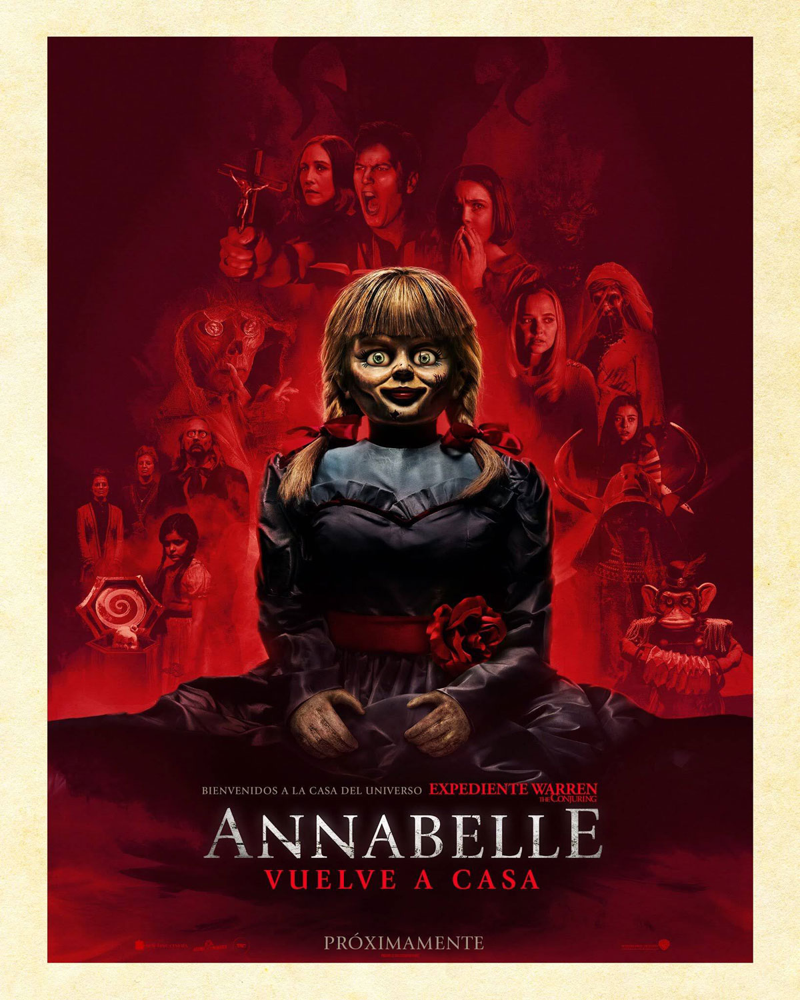

Annabelle 3


Calificación: 4 estrellas
Fecha de Estreno: 26/06/2019
Duración: 1h 46m
Ed y Lorraine Warren encierran a Annabelle, una muñeca poseída, que luego despierta a los espíritus.
Genero: Terror
Favoritos

Calificación: 5 estrellas
Fecha de Estreno: 26/04/2019
Duración: 3h 2m
Los Vengadores restantes deben encontrar una manera de recuperar a sus aliados para un enfrentamiento épico con Thanos, el malvado que diezmó el planeta y el universo.
Genero: Accion
Favoritos

Calificación: 5 estrellas
Fecha de Estreno: 14/07/2006
Duración: 1h 38m
Un pequeño fugitivo de la ley finge ser un niño para poder llegar hasta una gema robada que está oculta en la bolsa de una mujer.
Genero: Comedia
Favoritos

Calificación: 5 estrellas
Fecha de Estreno: 19/07/2001
Duración: 1h 30m
Un ogro llamado Shrek vive en su pantano, pero su preciada soledad se ve súbitamente interrumpida por la invasión de los ruidosos personajes de los cuentos de hadas.
Genero: Infantiles
Favoritos

Calificación: 4 estrellas
Fecha de Estreno: 12/09/2014
Un equipo se aventura en una peligrosa misión para transportar al único sobreviviente de un mortífero virus zombi, con la esperanza de que tenga la clave para una vacuna.
Género: Terror
Favoritos

Calificación: 5 estrellas
Fecha de Estreno: 15/04/2020
Un adolescente recluta a sus tres mejores amigos para buscar un tesoro legendario relacionado con la desaparición de su padre.
Género: Acción
Favoritos

Calificación: 5 estrellas
Fecha de Estreno: 01/05/1999
Bob, una esponja cuadrada que junto a su mejor amigo Patricio tienen muchas aventuras en el fondo del mar
Género: Infantiles
Favoritos

Calificación: 5 estrellas
Fecha de Estreno: 17/09/2013
Los detectives Jake, Amy, Rosa y Terry, son unos policías talentosos, sin preocupaciones y con el mejor registro de arrestos.
Genero: Comedia
Favoritos